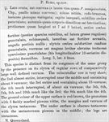

Click on images to enlarge
{kind=link}

Paropsis echo, description
Name
Trachymela echo (Blackburn, 1901)
Type specimen
Not examined.
Original description
[Original description shown in figure, translated from Latin using ChatGPT, 04/2026]
♀. Broadly oval; moderately convex (seen from the side a little less convex than P. semipunctata, Chapuis); less shining; reddish-brown, variegated with testaceous and pitchy colours. Head uneven, finely and closely punctulate. ntennae rather shorter than half the body length. rothorax broader than long as 7 to 3, in front closely and strongly punctured (behind more sparsely and more finely, at the sides coarsely rugulose), somewhat uneven, the sides rather strongly arcuate, the posterior angles absent. Elytra closely and moderately strongly, confusedly punctured, bearing rather large, slightly elevated, testaceous verrucae, very sparsely punctulate, these arranged in 10 longitudinal rows. Length 5 lines (~10.6 mm), width 4 lines (~8.5 mm).
Notes
Blackburn (1896) deals with P. echo as part of his 'Group ii' of the genus (i.e., those species with the sides of the prothorax evenly arched and whose elytral puncturation is without any linear arrangement. Within that group, he characterises it as:
(1) elytra with confused punctures interrupted on raised spaces of colour different from that of the derm;
(2) elytra with regular rows of isolated raised spaces.
Blackburn acknowledges that his 'Group ii' is an 'accidental assemblage of aberrant forms'. Due to this placement with species such as Paropsisterna anomala and P. fulvoguttata, T. echo was considered a Paropsisterna until Reid (2006) transferred it to Trachymela. This is Ta39. Its possible synonymy with T. vomica is discussed under the notes for that species.
References
Blackburn, T. 1901, "Revision of the genus Paropsis. Part VI", Proceedings of the Linnean Society of New South Wales, vol. 26, 159-196 (page 190).
Copyright © 2026. All rights reserved.